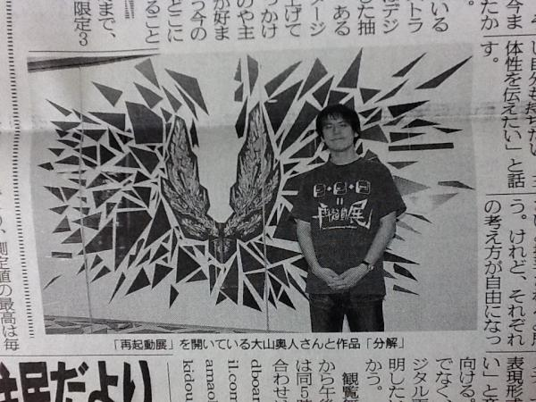
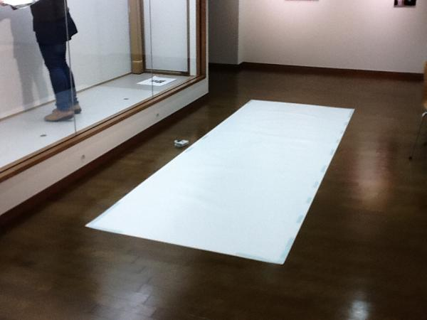
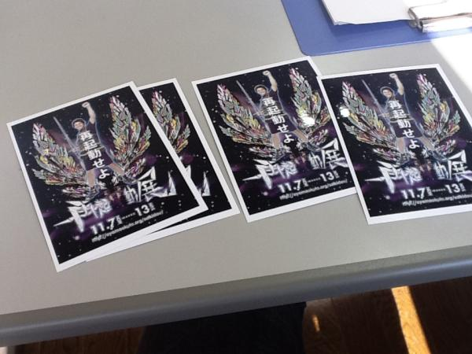

再起動完了 何だか本当に胸が熱くなった 明日はロールちゃんでも持っていこうかな
— 通行人Y@お前ら3DS買えよさん (@TsukoninY) 11月 11, 2011再起動完了(4日ぶり2回目) #再起動展
— しゃちくさん (@kichiku38) 11月 12, 2011今日また再起動展行ってみて、ﾗｲﾌﾞﾄﾞﾛｰｲﾝｸﾞってﾒｲｷﾝｸﾞに近い役割もあるのかーと思った ﾃﾞｼﾞﾀﾙだとなかなかそういうの難しいだろうけど、ｽｸﾘｰﾝとかﾃﾚﾋﾞで表示とかできたら…とかとか 自分の作らない分野のものだとどういう過程を経て作品ができてるか想像しづらい
— ナス(なめくじら)さん (@nasyo18) 11月 12, 2011やまのく展みてきました。丁寧な展覧会でございました
— にしおさん (@nissio) 11月 12, 2011再起動展の記事が載った盛岡タイムスやっと来ました。 #再起動展 twitter.com/yamanoku/st…

— 大山陸奥（ｵｵﾔﾏﾐﾁﾉｸ）さん (@yamanoku) 11月 15, 2011
土日限定公開作品です。 twitter.com/yamanoku/st…
— 大山陸奥（ｵｵﾔﾏﾐﾁﾉｸ）さん (@yamanoku) 11月 11, 2011
今日ご来場の方で、 先着四名に再起動照英差し上げます。 #再起動展 twitter.com/yamanoku/st…
— 大山陸奥（ｵｵﾔﾏﾐﾁﾉｸ）さん (@yamanoku) 11月 11, 2011